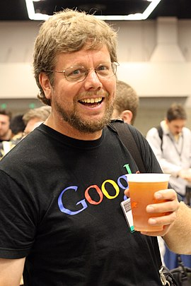

Гвидо ван Россум
Гвидо ван Россум(нидерл. Guido van Rossum; род. 31 января 1956, Гаага, Нидерланды) —
голландский программист, прежде всего известный как автор языка
программирования Python. Среди разработчиков Python Гвидо известен как
«великодушный пожизненный диктатор» проекта[3], что означает, что он
продолжает наблюдать за процессом разработки Python, принимая
окончательные решения, когда это необходимо. С июля 2018 года Гвидо ушёл
в постоянный отпуск от диктаторства, оставив за собой право быть обычным
разработчиком[4]. До разработки Python участвовал в проекте по написанию
языка для обучения программированию — ABC. Лауреат «Free Software Award»
2001 года. Покинув в декабре 2012 года корпорацию Google[5], с 2013 года
работал в компании Dropbox Inc[6], выйдя на пенсию в 2019[7], а в ноябре
2020 года присоединяется к одному из отделов корпорации Microsoft[8].
Биография
Гвидо ван Россум
родился 31 января 1956 года в Гааге, Нидерланды. Окончил Амстердамский
университет по специальности «математика и информатика» в 1982 году.
Затем Россум работал в различных исследовательских институтах, в том
числе Голландском центре математики и информатики (Амстердам),
Национальном Институте Стандартов (США) и Корпорации национальных
исследовательских инициатив[en] (США). В 2001 году ван Россум получил
премию Free Software Award, а в 2002 году — премию Нидерландской
ассоциации профессионалов UNIX[en]. В 2006 году Гвидо ван Россум был
признан Ассоциацией вычислительной техники «выдающимся инженером». В
декабре 2005 года ван Россум был принят на работу в Google[9], где он
разработал на Python веб-приложение для рецензирования кода Mondrian.
Также принимал активное участие в разработке компанией Google сервиса
хостинга сайтов и web-приложений Google App Engine. 7 декабря 2012 года
был последним днём работы в Google[10]. C 1 января 2013 года приступил к
работе в Dropbox[6]. 12 июля 2018 года ван Россум объявил о своём
намерении покинуть пост «великодушного пожизненного диктатора» проекта
по разработке языка программирования Python[4]. В октябре 2019 года
покинул Dropbox и вышел на пенсию[7]. В ноябре 2020 года на своём
Твиттер-канале заявил о своём решении присоединиться к подразделению
разработки компании Microsoft[11].